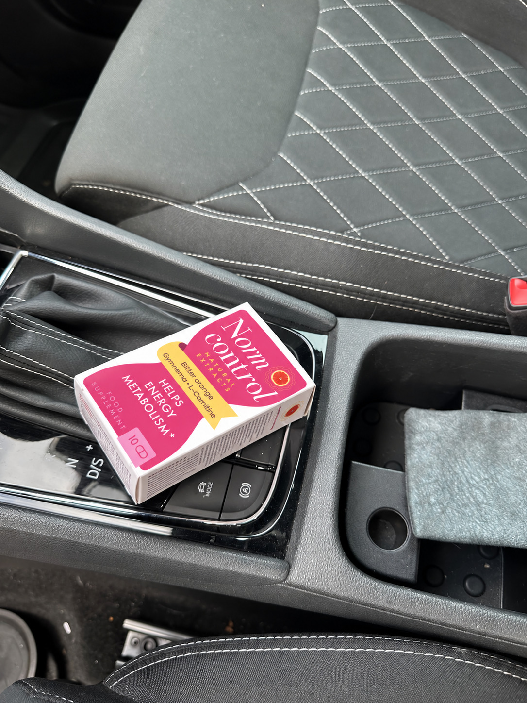

La "hormona de la muerte" — cortisol: una doctora espanola revelo por que despues de los 35 anos se engorda, incluso cuando apenas se come, y como miles de mujeres perdieron hasta 20 kg en 17 dias
El cortisol destruye su metabolismo desde dentro. Bloquea la quema de grasas. Obliga al cuerpo a acumular cada caloria. Hasta que no lo detenga, ninguna dieta le ayudara. Ana, de 54 anos, de Madrid, perdio 24 kg sin dietas ni ejercicio.

Los medicos lo llaman "la hormona de la muerte". El cortisol — la hormona del estres que, a partir de los 35 anos, comienza a destruir su cuerpo desde dentro. Bloquea la quema de grasas, provoca hinchazon, fatiga, hambre constante. Y es precisamente EL la causa de que engorde — incluso cuando casi no come.
Un reciente estudio de especialistas espanoles descubrio un ingrediente natural que puede detener el cortisol y ayudar a las mujeres a eliminar hasta 4 kg de grasa por semana — sin dietas, sin ejercicio, sin pasar hambre. Hasta 20 kg de grasa pura en un mes. Atencion: este metodo no tiene absolutamente nada que ver con laxantes.
Si tiene mas de 35 anos y no puede adelgazar, haga lo que haga — lea este articulo hasta el final. Descubrira como el cortisol sabotea su cuerpo, por que ninguna dieta puede funcionar hasta que no lo detenga, y que sencillo ritual natural puede cambiarlo todo. Sin pasar hambre, sin gimnasio, sin intervenciones quirurgicas.
"Tenia 54 anos y me daba miedo ir a la playa con mis nietos"
Me llamo Ana Garcia. Tengo 54 anos y soy de Madrid. Cuatro anos de kilos de mas me convirtieron en una ermitana. La grasa se acumulaba en el abdomen, los muslos, los brazos, debajo de la barbilla. Comia muy poco, pero el peso seguia aumentando.
Mi vida intima se apago por completo. Me daba verguenza. Ya no me sentia mujer. Perdi la confianza en mi misma, perdi el deseo, me perdi a mi misma.
Cada manana me despertaba y lo primero en lo que pensaba era en mi cuerpo. Ese peso. Esa sensacion de no tener control sobre nada. De que tu propio cuerpo es tu enemigo. Lo conoce? Esa sensacion de mirarse al espejo y no reconocerse?
Probe de todo — infusiones para adelgazar, pastillas, abono de gimnasio, dieta keto, ayuno intermitente. Las pastillas me causaban dolores de estomago y diarrea. En el gimnasio sufri durante meses y los kilos o no se movian o volvian. Con la dieta keto me mareaba y tampoco funcionaba.
Los medicos solo se encogian de hombros: "Es la edad, el metabolismo se ralentiza, acostumbrese." Ninguno de ellos pregunto por el nivel de cortisol. Nadie dijo que mi organismo estaba envenenado por "la hormona de la muerte", que destruia mi metabolismo cada minuto.
Uno me receto diureticos. Otro recomendo una operacion — un procedimiento bariatrico por 15 000 euros. Un tercero dijo que comiera menos. Pero yo comia 1 200 calorias al dia y aun asi engordaba!
Llegue a tal desesperacion que lloraba por las noches. Casi no salia de casa. Poco a poco dejaba de vivir. Mi hija me dijo: "Mama, pareces diez anos mayor de lo que eres." Ese fue el momento en que me dije — o algo cambia, o...
Pero entonces todo cambio
En un mercado de Madrid me encontre con una mujer que en su dia sufria exactamente el mismo problema. Noto lo nerviosa que estaba — yo estaba frente a un puesto de ropa mirando faldas que no podian quedarme. Me pregunto que me pasaba. No pude contenerme y se lo conte todo.
Sonrio y me dijo que ella habia estado aun peor — pesaba 112 kg y los medicos le habian advertido de que corria riesgo de infarto. Hasta que descubrio el articulo de la doctora Carmen Navarro.

Dra. Carmen Navarro, 74 anos — destacada especialista espanola en metabolismo hormonal y endocrinologia. Durante mas de 40 anos ha ayudado a las mujeres a ser mas esbeltas, mas sanas y a sentirse verdaderamente vivas de nuevo. Autora de decenas de publicaciones cientificas sobre la influencia de las hormonas en el peso corporal. Fue ella quien por primera vez llamo al cortisol "la hormona de la muerte" — y explico por que es el principal culpable del sobrepeso despues de los 35 anos.
Pedi Normcontrol esa misma noche. A la manana siguiente, despues de la primera capsula, me desperte y no podia creer lo que sentia. El abdomen estaba mas suave. La hinchazon habia bajado. A los tres dias la ropa me quedaba mas holgada. No cambie especialmente mi dieta. No fui al gimnasio. Simplemente segui lo que la doctora Navarro recomendaba.
Al segundo dia desaparecio el apetito constante que me atormentaba desde hacia anos. Deje de ir al frigorifico por la noche. Al tercer dia me puse unos vaqueros que no habia llevado en dos anos. Al quinto dia mi marido me dijo: "Ana, que ha pasado? Te veo diferente." Y yo, por primera vez en cuatro anos, sonrei.
Por que engorda — incluso cuando no come?
Junto con un equipo de destacados cientificos, la doctora Navarro revelo una verdad sencilla en la que al principio nadie creia: la causa de su sobrepeso no esta en su plato.
— Dra. Carmen Navarro, equipo de investigacion del Centro Metabolico de Madrid
Las culpables son las hormonas que bloquean su metabolismo despues de los 35 anos. Mas concretamente, la hormona que llamamos "la hormona de la muerte" — el cortisol.
Que es el cortisol? Es la hormona del estres, producida por las glandulas suprarrenales. En pequenas dosis es necesaria — nos ayuda a reaccionar ante el peligro, regula la presion arterial, ayuda con la inmunidad. Pero despues de los 35–40 anos, el cuerpo comienza a producirla cada vez mas. Y precisamente ahi esta el problema.
Imaginelo como una gota de veneno que recibe cada dia. Una gota no hace nada. Pero despues de un ano, dos, cinco — ese veneno se acumula. Y su cuerpo comienza a deteriorarse.
Que hace exactamente el cortisol con su cuerpo?
- Destruye la parte del ADN responsable de la quema de grasas — sus celulas literalmente pierden la capacidad de convertir la grasa en energia
- Ralentiza el metabolismo — aunque coma poco, el cuerpo funciona en "modo ahorro" y acumula cada caloria
- Obliga al cuerpo a acumular grasa — incluso del yogur, incluso mientras duerme, incluso de un vaso de agua con limon
- Aumenta el apetito — el hambre constante, especialmente de dulce y graso, no es culpa suya — es el cortisol
- Causa inflamacion — hinchazon, dolor en las articulaciones, fatiga, mal sueno — todo esto es una consecuencia
- Destruye el colageno — la piel pierde elasticidad, aparecen arrugas, celulitis, piel flacida
Por eso engorda mas rapido que antes. Por eso el abdomen no desaparece. Por eso aparecen hinchazon, debilidad, envejecimiento. Y por eso ninguna dieta, ejercicio o inyeccion funciona — esta luchando contra la consecuencia, no contra la causa.
La doctora Navarro y su equipo dedicaron 15 anos de investigacion para encontrar la manera de normalizar el nivel de cortisol sin medicamentos, sin terapia hormonal, sin efectos secundarios. Y lo encontraron — en un raro ingrediente natural que la humanidad conoce desde hace milenios, pero cuyo verdadero potencial para adelgazar se descubrio hace poco.
Cordyceps sinensis — el arma secreta contra el sobrepeso
Los cientificos identificaron un ingrediente natural que puede hacer casi lo imposible en el cuerpo — estabilizar las hormonas, normalizar el cortisol y activar la quema natural de grasas. Se trata de Cordyceps sinensis — un hongo raro que la medicina tradicional china utiliza desde hace milenios.
En el Tibet lo llaman "la mariposa dorada" o "el hongo oruga". Durante siglos fue tan raro y costoso que solo los emperadores chinos y los altos funcionarios podian consumirlo. Solo las biotecnologias modernas hicieron posible su cultivo y accesibilidad para la gente comun.
Como actua Cordyceps sinensis?
- Normaliza el nivel de cortisol — la causa principal del aumento de peso incontrolado. El cuerpo deja de estar en estado de estres cronico y finalmente "libera" las reservas de grasa
- Es altamente eficaz para la prevencion de la obesidad — como parte de una terapia integral para la reduccion del peso corporal, actua en varios niveles simultaneamente
- Sana el organismo y participa en la creacion de una microbiota intestinal saludable — el 80 % del sistema inmunologico se encuentra en los intestinos, y es precisamente su estado el que determina si engorda o adelgaza
- Mejora los indicadores metabolicos — el cuerpo deja de acumular grasa y comienza a quemarla como combustible
- Estimula la produccion de ATP — un compuesto organico gracias al cual aumenta la actividad fisica y la resistencia. En lugar de fatiga y debilidad, tendra energia para todo el dia
- Regula el nivel de azucar en sangre — desaparecen los antojos constantes de dulce, deja de "vaciar el frigorifico" por la noche
"Cordyceps sinensis es unico porque no actua solo sobre los sintomas — ataca directamente la causa hormonal del sobrepeso. El cuerpo pasa del modo de acumulacion al modo de quema. Y sin ningun efecto secundario. En 40 anos de practica no he visto nada mas eficaz."
— Dra. Carmen Navarro
Pero el Cordyceps sinensis por si solo no es suficiente. Lo importante es la forma correcta de extraccion, concentracion y dosificacion. Los suplementos alimenticios corrientes con cordyceps que puede encontrar en las farmacias contienen una concentracion demasiado baja de sustancias activas. Para que el cordyceps funcione realmente para adelgazar, debe ser procesado con una tecnologia especial.
Normcontrol — el preparado que ataca la verdadera causa

Junto con destacados especialistas, la doctora Navarro desarrollo un preparado a base de extracto 100% natural de Cordyceps sinensis en maxima concentracion — para darle un cuerpo ligero y hermoso para siempre.
Normcontrol es un suplemento alimenticio natural en forma de capsulas (20 uds. por envase) que actua sobre la verdadera causa hormonal del sobrepeso y le devuelve una piel firme, elastica y confianza en si misma.
Forma: Caja de carton, en su interior un frasco de plastico blanco con 20 capsulas.
Modo de empleo: Los adultos toman 1 capsula 2 veces al dia con las comidas. Duracion recomendada del tratamiento: 3 meses. Si es necesario, el tratamiento puede repetirse.
- Sin inyecciones, sin dietas, sin ejercicio
- Aunque tenga 40, 60 u 80 anos
- Aunque tenga diabetes, hipertension o fatiga cronica
- Aunque haya probado absolutamente todo — y nada haya funcionado
- Composicion 100% natural sin aditivos quimicos
Tratamiento de 3 meses que cambiara su vida
Normcontrol esta disenado para un tratamiento continuado. La duracion recomendada del tratamiento es de 3 meses. Si es necesario, puede repetirse. Y lo mas interesante — el efecto se intensifica gradualmente:
Semanas 1–2: Adaptacion
Cordyceps sinensis comienza a normalizar el nivel de cortisol. Desaparece el apetito constante, ceden la hinchazon y la retencion de liquidos. Se siente mas ligera, tiene mas energia. Deja de despertarse por la noche. Muchas mujeres informan de que, por primera vez en anos, los numeros de la bascula no suben — y eso por si solo ya es un avance.
Semanas 3–4: El metabolismo se activa
Las grasas comienzan a disolverse — primero la grasa visceral (interna), que rodea los organos y es la mas peligrosa. Precisamente esta grasa causa diabetes tipo 2, hipertension arterial y problemas cardiacos. Mejora la digestion, se restaura la microbiota intestinal. La ropa queda mas holgada. Perdida media: 4–7 kg.
Semanas 5–8: Limpieza profunda del organismo
El cuerpo se libera de las toxinas y residuos acumulados. La hinchazon desaparece por completo, las articulaciones dejan de doler, la piel se tensa y comienza a brillar. Aumenta la resistencia fisica gracias a la mayor produccion de ATP. Las mujeres informan de que tienen una energia que no tenian ni siquiera a los 30 anos. Perdida media: otros 6–10 kg.
Semanas 9–12: Estabilizacion de los resultados
El cuerpo ha pasado al modo de quema para siempre. Se normalizan la presion arterial, el colesterol, el nivel de azucar. Se siente como otra persona — mas ligera, mas sana, llena de energia. La piel esta firme, la celulitis retrocede. El resultado de la perdida de peso es duradero — a diferencia de las dietas, el peso no vuelve porque ha eliminado la causa, no solo la consecuencia.
Los resultados de Ana despues de 17 dias
Pero volvamos a Ana — la misma mujer de 54 anos de Madrid cuya historia leyo al principio:
Despues de dos meses perdi 24 kg. Empece a ponerme vestidos que no habia llevado en 5 anos. Mi marido volvio a mirarme como antes. Los nietos dijeron: 'Abuela, estas guapisima!' Y yo, por primera vez en anos, llore — pero esta vez de felicidad."
Ana no es la unica. La doctora Navarro ha recopilado miles de historias similares. Aqui van algunas:
Que dicen otras mujeres que probaron Normcontrol
Resultados de nuestras clientas — antes y despues


Vea lo sencillo que es!
- Sin dietas ni ejercicio. No necesita meses comiendo manzanas y ensaladas. No necesita sufrir en el gimnasio. Ni siquiera necesita salir de casa. Puede comer lo que quiera — Normcontrol funciona independientemente de su alimentacion.
- Desde la comodidad de su hogar. Basta con tomar 1 capsula de Normcontrol 2 veces al dia con las comidas — eso es todo. Vive con normalidad mientras su cuerpo se convierte en una maquina de quemar grasa. 10 segundos por la manana, 10 segundos por la noche. Ese es todo el "plan de entrenamiento".
- Sin grandes gastos. Nada de clinicas caras, inyecciones u operaciones. Nada de abono de gimnasio a 60 euros al mes. Nada de costosos programas dieteticos por miles de euros.
- Sin efectos secundarios. Composicion 100% natural. Sin quimicos, sin hormonas, sin laxantes. Su cuerpo recibe lo que necesita — nada mas, nada menos.
Para quien esta disenado Normcontrol?
1. Pesa mas de 90 kg?
En el primer mes pierda 8–12 kg, en un tratamiento de 3 meses incluso 20–30 kg! Ya en las primeras 4 semanas comenzara a perder una cantidad visible de grasa. Y lo mas importante — el peso no volvera, porque Normcontrol resuelve la causa, no el sintoma.
2. Le preocupan los problemas de salud?
Colesterol alto, hipertension, dolor articular, falta de energia, mal sueno? En solo 2 semanas sus resultados se veran excelentes. En 4 semanas los dolores desapareceran. No vivira mas con miedo por su salud. Normcontrol no solo sana su figura — sana todo el organismo.
3. Le gusta la buena comida y no puede seguir una dieta?
No es necesario. Las dietas estrictas ni siquiera se recomiendan. Puede comer lo que quiera — Normcontrol actua independientemente de su alimentacion. Y ademas — despues de la primera semana notara que come menos de forma natural. No porque se obligue — sino porque el cuerpo ha dejado de enviar senales falsas de hambre.
4. Odia el deporte?
No se fuerce a entrenar. Su cuerpo ya esta bajo presion por el sobrepeso — el ejercicio forzado puede causar aun mas estres en las glandulas suprarrenales y la produccion de cortisol aumentara. Se recomienda comenzar con actividad fisica ligera despues de 2–4 semanas, cuando sea mas ligera. Y gracias al aumento de la produccion de ATP, tendra tambien ganas de moverse!
5. Se acomplejada por su peso?
Cada vez le cuesta mas encontrar ropa que le quede bien? No se siente atractiva? Evita los espejos, las fotos, los banadores? Dese menos de un mes. Por fin podra ponerse vestidos bonitos de varias tallas menos. Por fin querra hacerse selfies. Por fin se sentira como una mujer.
6. Tiene miedo de que no funcione?
Lo entendemos. Despues de tantas decepciones es natural ser esceptica. Pero Normcontrol no es "otro preparado milagroso" — es una solucion cientificamente fundamentada que ataca la verdadera causa del sobrepeso. Miles de mujeres en Espana ya lo han probado con exito.
Que recibe con su pedido:
La vida es demasiado hermosa para reducirla con kilos de mas. No le parece? No tiene por que sufrir. No tiene por que avergonzarse. No tiene por que evitar los espejos. No arriesga absolutamente nada. Lo unico que puede perder son 20, 30 o incluso 50 kg de peso sobrante.
Rellene el breve formulario a continuacion y obtenga un descuento del 50 % en Normcontrol. La oferta es limitada!
No es necesario pagar por adelantado. Nuestro mensajero le entregara el envio para asegurar que recibe un producto original. Pago contra reembolso.
Pida Normcontrol con un 50 % de descuento
Comentarios (14):
